01 블록 A · 오프닝
WrtnEdu × 케미스트릿 강남역
과정 2
AI가 찾아주는 내 가게 맞춤 정부지원금 (n8n 자동화)
과정 2 — AI가 찾아주는 내 가게 맞춤 정부지원금 (n8n 자동화)
4시간 실습 · 소상공인 맞춤 워크숍
완성 산출물: 매주 월요일 맞춤 공고 메일 + 시트 기록
준비물: 노트북 · Google 계정 · 사업자등록증 · 매출/업종 정보
뤼튼테크놀로지스 × 케미스트릿 강남역
안녕하세요 사장님. 오늘 4시간 동안 사장님 가게에 맞는 정부지원금 공고를 매주 월요일 오전 9시에 자동으로 메일로 받는 자동화 하나를 직접 완성하실 겁니다. 처음부터 만드는 게 아니라 제가 준비해 둔 워크플로우를 불러와서 사장님 정보 3칸만 고쳐 쓰시면 돼요.
02 블록 A · 오프닝
사장님, 이 돈을 놓치고 계십니다
정부지원금 연 수조 원 규모
요식업 사장 대부분 미신청
정보가 없어 못 받음
오늘 4시간 뒤 자동 알림 완성
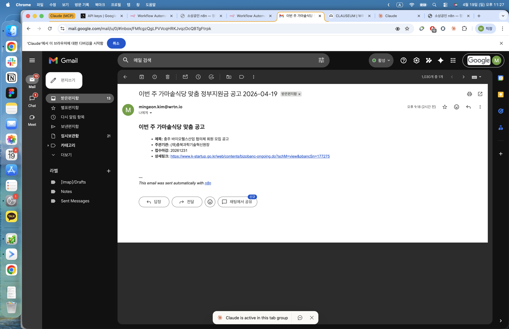
정부지원금은 매년 수십조 원씩 풀리는데, 소상공인 사장님들 80%는 공고가 올라온 줄도 모르고 지나가세요. 오늘 수업의 출발점은 단순합니다 — 이 돈을 사장님이 놓치지 않게 하는 것.
03 블록 A · 오프닝
정부지원금 한 해 규모
중앙·지방 합계 수조 원 (출처: 기획재정부·중소벤처기업부 연간 예산서)
기업마당·보조금24·K-Startup 등 수백 건
신청자 적어 경쟁률 낮음
정보 먼저 아는 사람이 받음
연 10조원 규모에 중소·소상공인 대상만 추려도 4조원이 넘습니다. 숫자가 너무 크면 실감이 안 나시죠. 그래서 오늘 개인 사장님 단위로 좁혀서 '우리 가게에 맞는 공고만' 골라 보내는 장치를 만들 겁니다.
04 블록 A · 오프닝
근데 사장님은 왜 못 받으셨을까요?
공고 사이트 매일 확인 어려움
가게에 맞는지 판단 막막
마감 지나서 알게 됨
"나중에 해야지" 반복
사장님이 몰라서 못 받으신 게 아니라, 공고 사이트가 한두 곳이 아니고 매일 수십 개 올라오니까 확인이 불가능했던 거예요. 오늘은 AI가 대신 읽고 사장님 가게에 맞는 것만 메일로 보내줍니다.
05 블록 A · 오프닝
매주 월요일 9시, 자동 메일이 온다면?
매주 같은 시각에 자동 실행되는 자동화 흐름.
사장님 대신 컴퓨터가 확인
가게에 맞는 공고만 골라 전달
n8n = 코드 없이 자동화 조립
레고 블록처럼 끼워 맞춤
매주 월요일 오전 9시, 사장님 받은편지함에 '이번 주 내 가게 맞춤 공고'라는 제목으로 한 통씩 도착합니다. 컴퓨터를 켜 놓으실 필요도, 사이트에 들어가실 필요도 없어요.
06 블록 A · 오프닝
오늘 사장님이 만들 것
오늘은 만들지 않고 불러와 사장님 가게에 맞게 손봅니다.
레시피 = 재료 → 순서 → 결과
재료: 정부 공고 자료
순서: 9블록 한 장에 펼침
결과: 매주 월요일 맞춤 메일
오늘 만들 전체 그림입니다. 스케줄(알람) → 공고 API → 파싱 → AI 판정 → 분기 → 시트 기록 → 메일 발송 → 끝. 9개 블록이 레고처럼 연결된 구조고, 사장님은 가져와서 3칸만 바꾸시면 돼요.
07 블록 A · 오프닝
완성 데모 — 메일 받는 장면
매주 월요일 아침 메일 도착
우리 가게 맞춤 공고 한 줄 요약
상세링크 클릭 = 신청 페이지
사장님이 할 일: 메일 열기
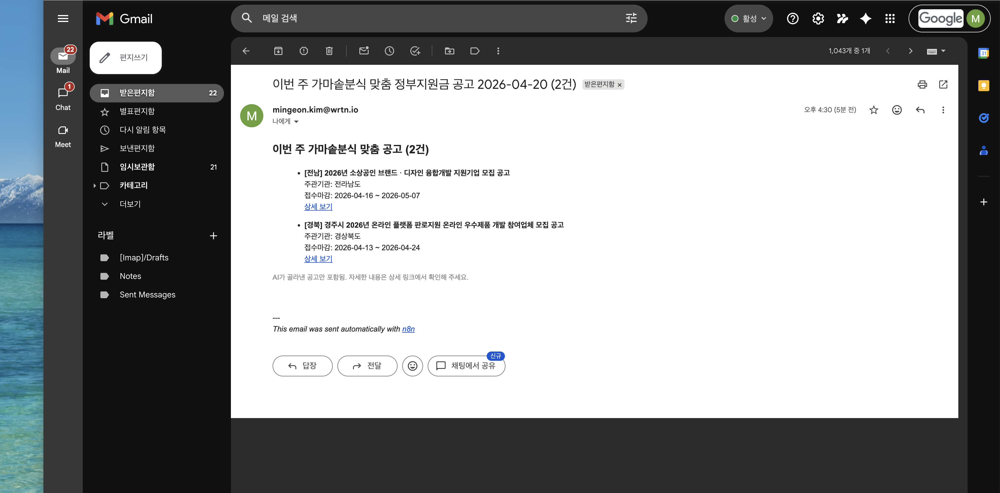
데모 영상은 강사 시연
이게 완성됐을 때 실제로 도착하는 메일입니다. 제목·본문·상세 링크까지 자동으로 채워져요. 오늘 수업이 끝나기 전에 사장님 받은편지함에도 같은 메일이 들어가 있을 겁니다.
08 블록 A · 오프닝
오늘 3가지 약속 + 준비물
약속 1: n8n 가입·작업 공간
약속 2: 레시피 불러오기·손보기
약속 3: 매주 월요일 자동 실행 ON
준비물: 노트북 · Google 계정 · 사업자등록증 · 매출/업종 정보
세 가지 약속만 드릴게요. 첫째 n8n 작업 공간 하나 만들기, 둘째 워크플로우 불러와서 사장님 정보로 3칸 손보기, 셋째 한 번 실행해서 메일까지 확인하기. 준비물은 노트북·Google 계정·사업자등록증·매출/업종 메모. 중간에 헷갈리시면 바로 손 들어 주세요.
09 블록 B · n8n 가입
n8n 가입 — 1단계: 회사 이메일 입력 (최소 14일 무료)
가입은 2단계 — 이메일 입력 → 이름/비밀번호 입력. (커리큘럼 '15일'은 구 버전; 현재 Cloud는 계정마다 최소 14일 ~ 최대 180일, 대시보드 카드에 남은 일수 표시.)
app.n8n.cloud/register 접속
Company email 칸에 이메일 입력
Submit 클릭 → 다음 화면에서 이름·비밀번호·작업공간 이름 입력
신용카드 입력 없음
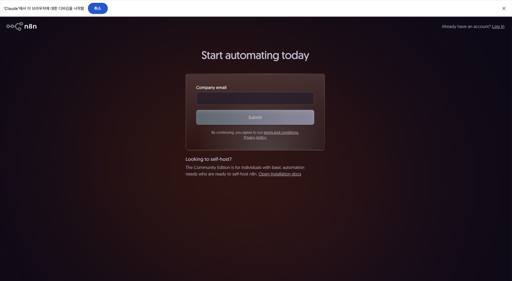
app.n8n.cloud/register 에 접속하셔서 이메일·이름·비밀번호만 입력하시면 됩니다. Start free 버튼 누르면 바로 사장님 전용 작업 공간이 생성돼요. 신용카드 입력 칸이 없다는 걸 꼭 확인해 주세요 — 자동 결제 위험이 없다는 뜻입니다.
10 블록 B · n8n 가입
작업 공간 주소 + 이메일 인증
사장님 전용 작업 공간 주소가 이메일로 도착합니다.
주소 = (사장님이름).app.n8n.cloud
받은편지함에서 인증 링크 클릭
30~60초 후 작업 공간 준비
스팸함 확인 습관
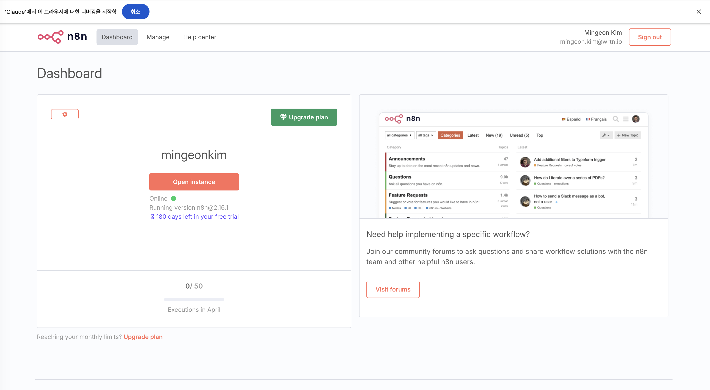
가입 직후 이메일로 인증 링크와 함께 사장님 전용 주소(`사장님이름.app.n8n.cloud`)가 도착합니다. 그 주소가 사장님 개인 작업 공간 URL이에요. 북마크에 저장해 두시면 다음부터 바로 들어가실 수 있습니다.
11 블록 B · n8n 가입
Dark → Light 모드로 바꾸기
기본 어두운 화면을 밝게 바꿔 눈의 피로를 줄입니다.
Settings(설정) → Personalisation(개인 설정)
Color scheme(색상 테마) = Light(밝은 모드) 선택
흰 배경이 글씨 가독성 ↑
Cmd+(확대) · Cmd-(축소) · Windows: Ctrl+ · Ctrl- 확대 가능
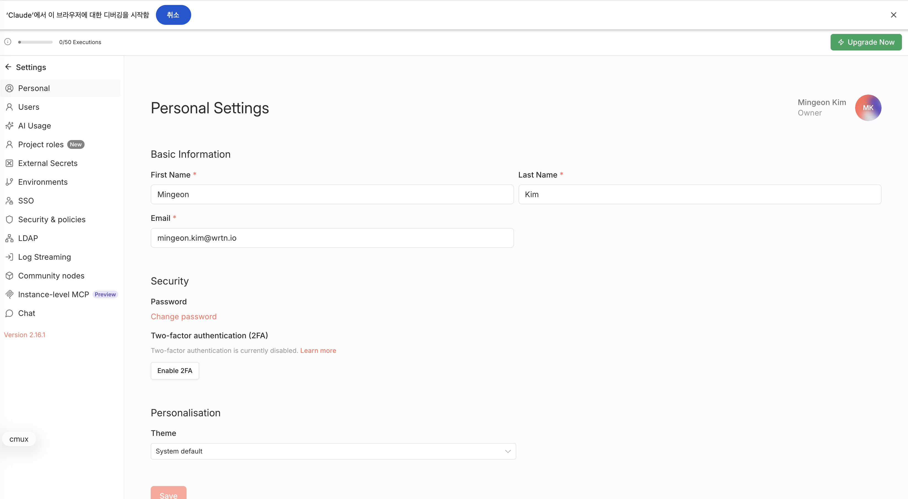
기본 테마가 Dark(검정)인데, 뒷자리에서도 글씨가 잘 보이도록 Light(흰색) 테마로 바꿔 주세요. 설정 → Personal → Theme → Light. 딱 한 번만 바꾸시면 됩니다.
12 블록 B · n8n 가입
0/50 카운터 · Upgrade 배너 · Build with AI
수업 중 눈에 띄는 3개 배지·버튼 미리 구분해 두기.
좌상단 0/50 = 자동 실행 한도
수업 중 2~3회만 사용
우상단 Upgrade Now = 무시 OK
Build with AI 버튼도 오늘 안 씀
대시보드 상단에 '0/50' 같은 카운터가 보이실 거예요. 이건 이번 달 자동화 실행 횟수를 세는 거고, 무료 체험 기간에는 50회 여유를 드립니다. Upgrade 배너는 무시하셔도 괜찮아요 — 오늘은 무료 범위 안에서만 움직입니다.
13 블록 B · n8n 가입
실습 전 1분 — 걱정 없애기
처음 화면 = 버튼 단순
글씨 작으면 Cmd + +(확대) · Windows: Ctrl + + 확대
한글·영문 키 위치 확인
막히면 바로 손 들기
실습 들어가기 전에 1분만 쉬어 가요. 오늘 실수해도 괜찮습니다. 틀려도 사장님 가게에는 아무 일도 안 일어나요. 코드를 외우실 필요도, 영어를 외우실 필요도 없어요 — 따라만 오시면 됩니다.
14 블록 B · n8n 가입
템플릿 말고 Start from scratch(빈 캔버스로 시작)
템플릿 함정을 피해 빈 캔버스에서 불러오기로 진행.
첫 로그인 = 템플릿 6장 대시보드
Start from scratch(빈 캔버스로 시작) 초록 ✓ 클릭
템플릿 카드는 오늘 사용 안 함
빈 캔버스 = 사장님 작업판
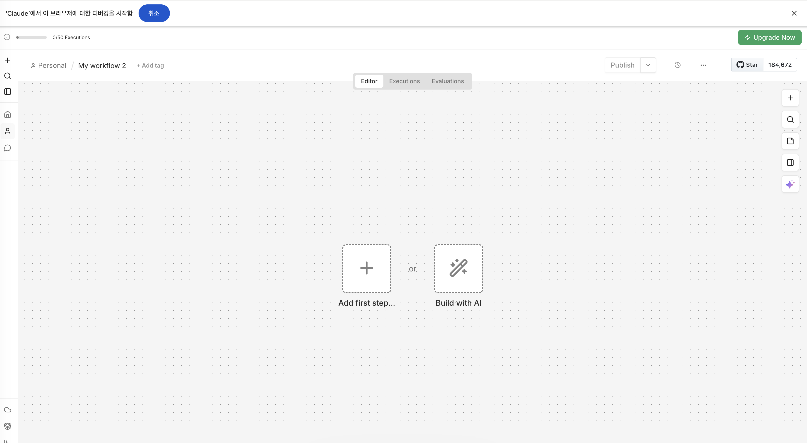
Start from scratch(빈 캔버스로 시작)
n8n 메인 화면에서 '+ Create Workflow' 누르시면 템플릿을 고르라고 뜨는데, 오늘은 'Start from scratch'(빈 캔버스)를 골라 주세요. 여기다가 제가 준비한 파일을 불러올 거예요.
15 블록 C · 휴식
⏱
휴식 #1 — 10분
다음 → 실습 1 — 정부 공고 API 가져오기
잠시 숨 돌리기
작업 공간 탭 닫지 말기
화장실 · 커피는 빠르게
다음 45분은 집중 실습
첫 번째 휴식입니다. 10분 동안 잠시 물 한 잔 드시고, 눈 좀 쉬게 해 주세요. 브라우저 탭은 닫지 마시고 그대로 두시면 돼요. 돌아오시면 바로 실습 1 시작합니다.
16 블록 D · 실습 1 · 공고 API
[실습 1]
정부지원사업 공고 가져오기
1:00–1:45
45분
배울 것: API 키 → HTTP Request(자료 받아오기) → Code(파싱)
결과물: 공고 원본 데이터가 캔버스에 도착
커리큘럼 블록: 1:00~1:45 (45분)
커리큘럼 '기업마당' → 오늘은 K-Startup API (#17 참고)
지금부터 첫 번째 실습 — 정부지원사업 공고를 인터넷에서 불러오는 구간입니다. 45분짜리 블록인데, 끝나고 나면 '내 가게 들어가는 자동화의 첫 숨'이 느껴지실 거예요. API라는 단어가 낯설어도 괜찮아요 — 주방 주문표 비유로 풀어 드립니다.
17 블록 D · 실습 1 · 공고 API
오늘 API = K-Startup · 커리큘럼 '기업마당'도 같은 방식
오늘 수업 = K-Startup API (인증 불필요 · 더 안정적)
커리큘럼 기준 도구: 기업마당 (정부24 계열)
둘 다 공고 자료 제공 — 같은 방식(HTTP Request)으로 연결
워크플로우 파일의 URL만 바꾸면 기업마당도 동작
두 사이트 스크린샷 side-by-side (K-Startup 로고 + 기업마당 로고)
오늘 사용할 공고 API는 K-Startup입니다. 커리큘럼에는 '기업마당'으로 적혀 있는데, 두 사이트가 같은 공고를 거의 똑같이 싣기 때문에 수업에서는 K-Startup 을 씁니다. API 키 발급 없이 바로 호출 가능해서 시간을 아낄 수 있어요. 워크플로우 파일의 URL만 바꾸면 나중에 기업마당으로도 똑같이 동작합니다.
18 블록 D · 실습 1 · 공고 API
오늘은 만들지 않고 불러옵니다
처음부터 만들지 않고 불러와서 내 것으로 바꿉니다.
완성된 레시피 카드 한 장
9블록이 한 번에 펼쳐짐
사장님 할 일: 3칸만 손보기
매주 월요일 자동 실행 ON까지
오늘은 워크플로우를 처음부터 만들지 않습니다. 제가 미리 만들어 둔 완성품을 불러와서 사장님 정보로 3칸만 고쳐 쓸 거예요. '재료 준비된 밀키트'라고 생각해 주세요.
19 블록 D · 실습 1 · 공고 API
workflow.json 파일 받기
불러올 자동화 흐름 파일을 노트북에 준비.
course2_kit 폴더 열기
workflow.json 파일 확인
다운로드 위치 메모
파일 한 개만 준비 OK
course2_kit 폴더 안에 workflow.json 이라는 파일이 있어요. 이 파일 하나가 9블록 전체 설계도입니다. 강사가 공유해 드린 링크에서 다운로드해 두시고, 바탕화면에 잠깐 놔 두세요.
20 블록 D · 실습 1 · 공고 API
불러오기 3단계 = ⋯ 메뉴
메뉴 한 번 클릭으로 완성된 흐름을 내 작업 공간에 풀어놓기.
우상단 ⋯ 아이콘 클릭
Import from file(파일에서 가져오기) 선택
workflow.json 파일 고르기
9블록 캔버스에 펼쳐짐
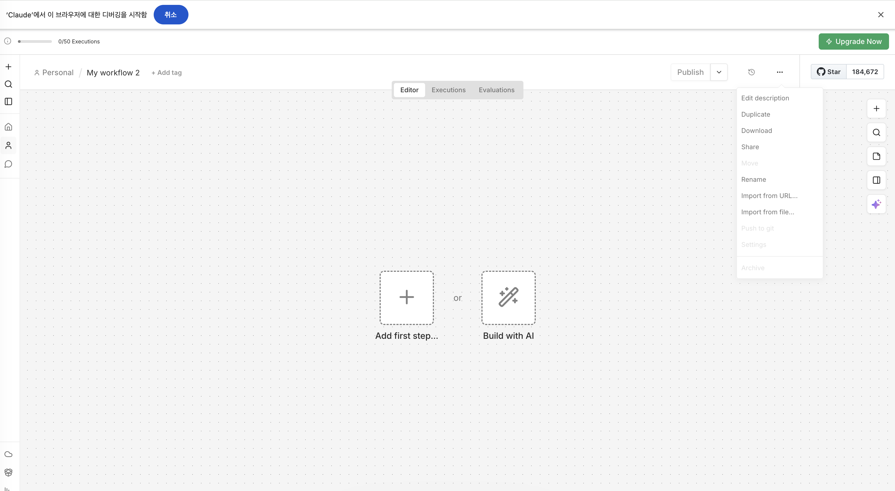
⋯ → Import from file(파일에서 가져오기)
n8n 작업 공간에서 워크플로우 불러오기는 3단계입니다. 우측 상단 ⋯(세 점 메뉴) → Import from file → 방금 받은 workflow.json 선택. 1분 안에 끝나요.
21 블록 D · 실습 1 · 공고 API
불러오기 완료 — 9블록 한눈에
완성된 9블록이 한 번에 펼쳐진 상태를 시각 확인.
블록 8개 가로로 연결
Gemini 아래 보조 블록 1개
3개 블록에 빨간 점 (Gemini·Sheets·Gmail)
빨간 점 = 다시 연결 필요
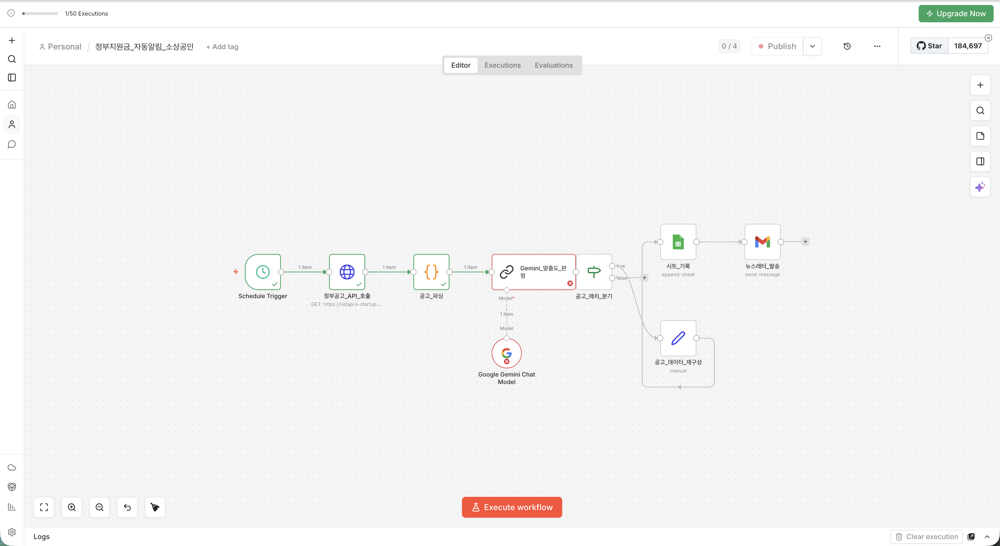
불러오기가 끝나면 캔버스에 9개 블록이 가로로 쫙 펼쳐져요. Schedule Trigger → HTTP → Code → Gemini → IF → Set → Sheets → Gmail 순서입니다. 한눈에 보시고 '오, 이게 오늘 만들 거구나' 하시면 됩니다.
22 블록 D · 실습 1 · 공고 API
블록 1: Schedule Trigger (알람)
시간표대로 흐름을 자동 시작하는 시작 신호 블록.
역할: 매주 월요일 9시 알람
이미 Weeks · Mon · 9시 설정됨
수업 중엔 수동 실행만
활성화는 마지막 단계
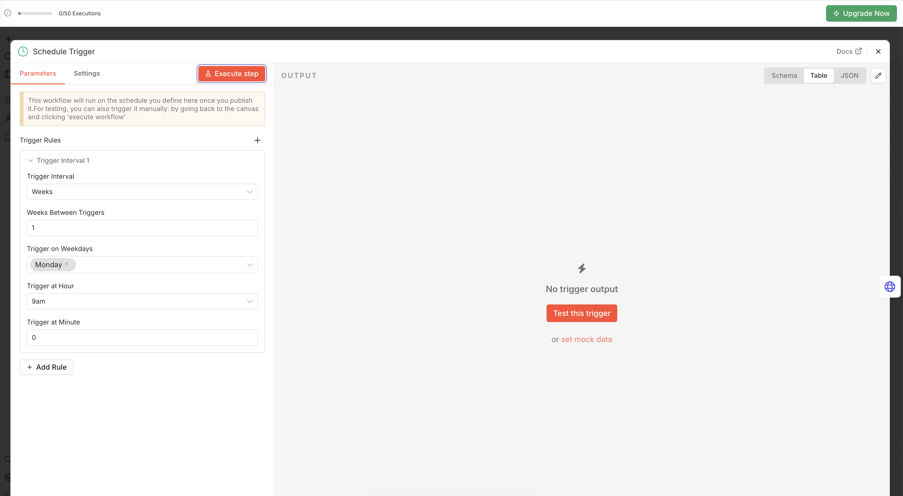
첫 번째 블록은 시계 모양 Schedule Trigger입니다. 매주 월요일 오전 9시에 자동으로 시작하는 알람이에요. Interval=Weeks, Day=Monday, Hour=9 세 칸만 확인하시면 되고, 활성화는 맨 마지막 Publish 단계에서 켤 거예요.
23 블록 D · 실습 1 · 공고 API
블록 2: 정부공고_API_호출 (HTTP)
주방에 주문표 한 장 넣으면 요리 한 상이 나오듯, 정해진 주소에 "자료 주세요" 한 번 묻고 가져옵니다.
역할: K-Startup에 자료 요청
API = 주방 주문표 — 주문 한 장 → 자료 한 상자
URL · Method · Response Format 설정
Method(메서드)=GET · Format(응답 형식)=Text 고정
🍳 API = 주방 주문표 · 📮 HTTP = 택배 배달원
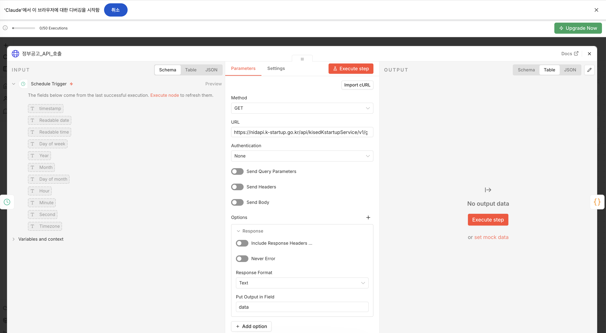
두 번째 블록은 정부공고_API_호출. 인터넷에서 공고 데이터를 받아오는 블록이에요. URL·Method·Response Format 세 칸이 미리 채워져 있고, 사장님이 수정할 건 하나도 없습니다. '실행해 보기' 버튼만 눌러 보시면 JSON이 쏟아져 나옵니다.
24 블록 D · 실습 1 · 공고 API
블록 3: 공고_파싱 (Code)
뭉쳐 온 자료에서 필요한 칸만 뽑는 정리 직원.
역할: 덩어리를 8칸 정리
JavaScript 20줄 이미 작성됨
제목·주관기관·접수마감 추출
코드 읽기 부담 없음
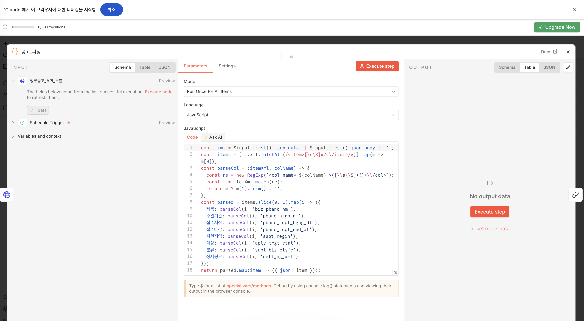
세 번째 블록은 공고_파싱. 방금 받은 XML 덩어리에서 제목·주관기관·접수마감·상세링크 네 조각만 골라내는 JavaScript 20줄이 이미 써 있어요. 사장님이 코드를 읽으실 필요는 없습니다 — '텍스트 정리기'라고만 이해하시면 돼요.
25 블록 D · 실습 1 · 공고 API
[안심] 가게 열쇠 복사 허락
복사된 열쇠로 지정한 범위만 대신 사용.
구글 본사에 허락 한 번
Sheets·Gmail 열쇠만 복사
비밀번호는 구글에만
"확인되지 않은 앱" 경고 없음
🔐 가게 열쇠 복사 개념도 — 원본 열쇠(비밀번호)는 구글에, 복사본만 n8n에
자, 여기서 잠깐 안심하실 대목이 있어요. 앞으로 나올 'Sign in with Google'·'Allow' 같은 화면이 조금 무서우실 수 있는데, 이건 '제 가게 열쇠를 복사해서 n8n이 대신 쓰게 해 준다'는 뜻입니다. 복사본이라 사장님 원본 계정은 그대로고, 언제든 Revoke 버튼으로 돌려받을 수 있어요.
26 블록 D · 실습 1 · 공고 API
다시 연결 1/3 — Gemini 출입증 번호
AI가 쓰는 출입증 번호를 로그인 정보 꾸러미에 저장. (Sheets·Gmail까지 같은 흐름을 세 번 반복합니다.)
같은 동작 ×3 중 1번째
Gemini Chat Model 블록 더블클릭
자격증명(Credential) → + Create New(새로 만들기)
API Key 칸에 AIza... 붙여넣기
Save → 초록 Connection tested
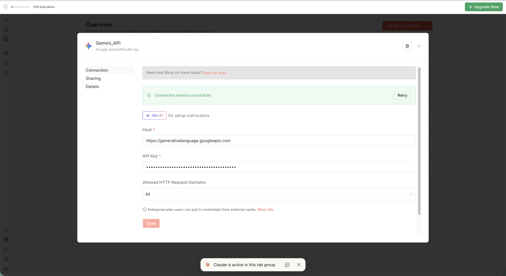
가져온 워크플로우에는 빨간 점이 몇 군데 떠 있어요. '자격증명을 다시 골라주세요'라는 뜻입니다. 첫 번째로 Gemini_맞춤도_판정 블록을 더블클릭하시고, 하단 Google Gemini Chat Model 의 Credential 에서 'Gemini_API'를 고르시거나 '+ Create New'로 새로 만드시면 돼요.
27 블록 D · 실습 1 · 공고 API
다시 연결 2/3 — Sheets Sign in with Google(구글로 로그인)
한 번 클릭으로 구글에 Sheets 열쇠 복사 허락.
같은 동작 ×3 중 2번째
시트_기록 블록 더블클릭
자격증명(Credential) → + Create New(새로 만들기)
Sign in with Google(구글로 로그인) 큰 버튼
팝업에서 본인 구글 계정 클릭
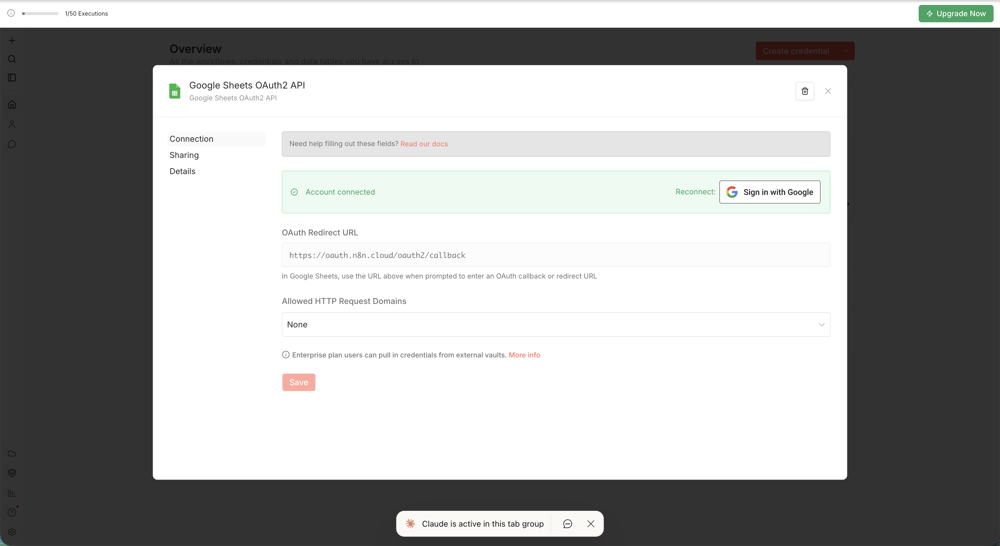
두 번째로 시트_기록 블록 더블클릭. Credential 칸에서 'Sign in with Google' 버튼을 누르시면 팝업이 뜨고, 사장님 본인 Google 계정을 고르시면 됩니다. 승인 한 번만 하면 끝이에요.
28 블록 D · 실습 1 · 공고 API
계정 선택 → 다음 허락 화면에서 Allow
계정 선택(이 화면) → 범위 확인 → Allow 까지 2단계. Sheets 열쇠 복사 최종 승인.
팝업에 내 Google 계정 목록 표시
사장님 본인 계정 한 번 클릭
다음 화면에 Sheets 범위 + 체크박스 · 큰 Allow 버튼
Allow 한 번 → 팝업 자동 닫힘
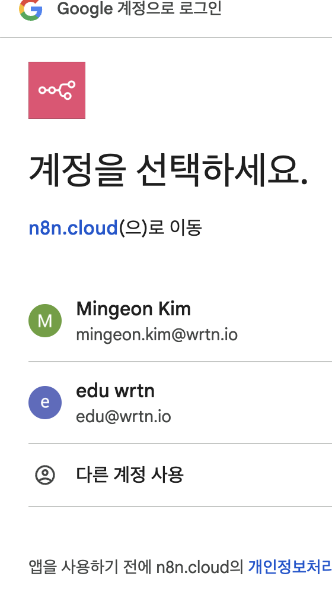
Google 계정 선택 팝업 — 본인 계정 한 번 클릭 후 다음 Allow 화면으로
Google 계정 선택 팝업이 뜨면 사장님 본인 계정을 한 번 클릭해 주세요. 그 다음 화면에서 Google이 '이 앱에 Sheets 권한 허용하시겠습니까?'라고 묻고 체크박스들이 이미 체크된 채 큰 Allow 버튼이 보일 거예요. 그 Allow를 한 번 누르시면 팝업이 자동으로 닫히고 자격증명이 생성됩니다.
29 블록 D · 실습 1 · 공고 API
다시 연결 3/3 — Gmail 같은 방법 (마지막)
Gmail도 같은 방식으로 열쇠 복사 한 번 더. 이 한 번으로 반복 끝.
같은 동작 ×3 중 3번째 — 이걸로 끝
뉴스레터_발송 블록 더블클릭
자격증명(Credential) → + Create New(새로 만들기)
같은 구글 계정 선택
허락 스코프에 "보내기" 체크
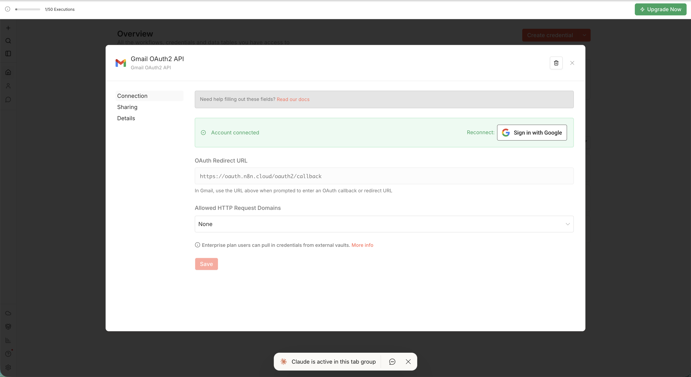
세 번째로 뉴스레터_발송(Gmail) 블록 더블클릭. 똑같은 방식으로 'Sign in with Google' → 같은 계정 선택 → Allow. Sheets와 Gmail을 같은 Google 계정으로 연결하시면 제일 깔끔합니다.
30 블록 D · 실습 1 · 공고 API
[체크포인트] 빨간 점 0개 — 준비 완료
9블록 모두 정상 아이콘
Connected 배지 3개 초록
Credential not set 메시지 없음
손보기 준비 완료
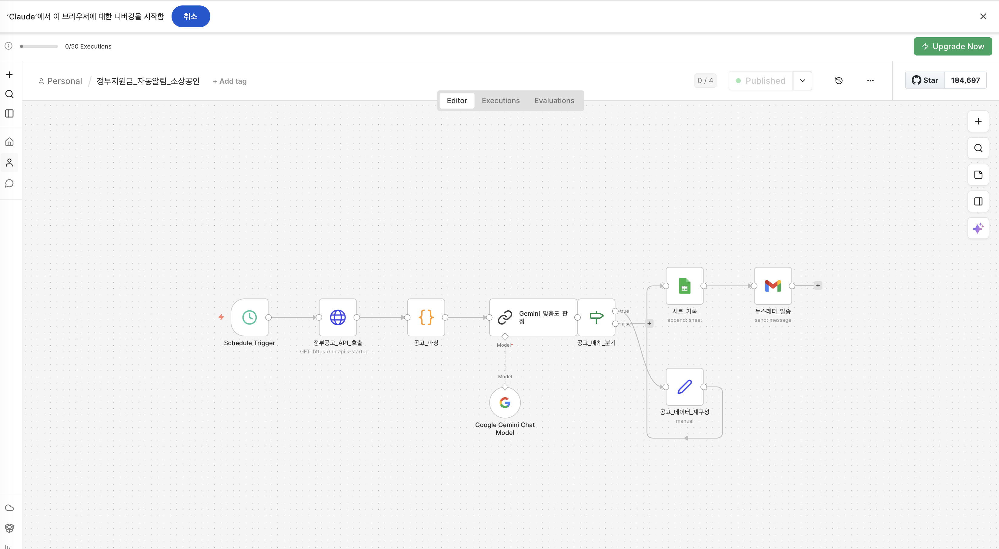
체크포인트 시간이에요. 캔버스를 한 번 둘러보시고 빨간 점이 하나도 남아 있지 않으면 성공입니다. 빨간 점이 아직 남아 있으면 그 블록만 다시 더블클릭해서 Credential 칸을 다시 고르시면 돼요.
31 블록 E · 휴식
⏱
휴식 #2 — 10분
다음 → 실습 2 — Gemini 맞춤도 판정
1:45~1:55 커리큘럼 공식 휴식
실습 1 끝 · 실습 2 시작 전
작업 공간 탭 닫지 말기
돌아오면 Gemini 블록부터
두 번째 휴식. 10분 쉬어 가요. 브라우저 탭은 그대로 두시고, 화장실·커피만 다녀오셔도 됩니다. 돌아오시면 실습 2 — AI한테 판단을 맡기는 구간이에요.
32 블록 F · 실습 2 · AI 판단
[실습 2]
Gemini가 공고를 골라주기
1:55–2:40
45분
배울 것: Gemini API 키 → Chat Model → 프롬프트 작성
결과물: 우리 가게 맞는 공고만 통과
커리큘럼 블록: 1:55~2:40 (45분)
이 실습이 끝나면 = AI가 대신 공고 읽고 판단
실습 2 시작. 지금부터 45분 동안은 AI한테 '이 공고가 우리 가게에 맞는지'를 물어보게 할 거예요. Gemini 블록 안에 이미 프롬프트가 써 있고, 사장님이 바꿀 건 딱 세 줄 — 가게 이름·업종·지역입니다.
33 블록 F · 실습 2 · AI 판단
블록 4: Gemini_맞춤도_판정
사장님 대신 공고를 읽고 우리 가게용인지 골라줍니다.
역할: AI가 공고 적합도 판단
Prompt Type(프롬프트 유형)=Define below(아래에 정의)
질문글 5줄 이미 작성됨
한식당 예시 페르소나 기본값
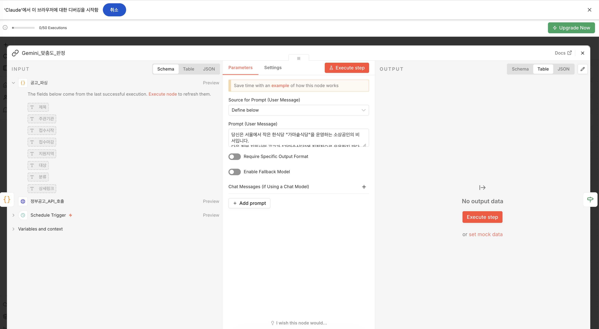
블록 4번은 Gemini_맞춤도_판정. 공고 제목·본문을 받아서 '사장님 가게에 맞음/안 맞음'을 JSON으로 답해 주는 AI 블록입니다. 지금 더블클릭하시면 프롬프트 전문이 보여요.
34 블록 F · 실습 2 · AI 판단
블록 4-보조: Gemini Chat Model
AI 본체에 꽂는 점선 보조 블록. 모델과 출입증 번호만 지정.
역할: 매니저 머릿속 AI (보조 블록 / Sub-node)
모델 = gemini-2.5-flash
2.0 계열보다 안정적·빠름
로그인 정보 꾸러미 = Gemini_API (자격증명 / Credential)
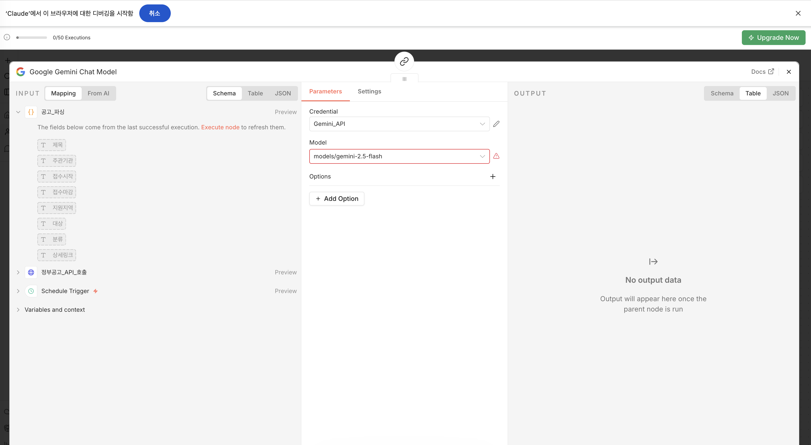
보조 블록 (Sub-node) — 상위 블록에 자동 부착
4번 아래 작은 보조 블록이 하나 딸려 있어요. Gemini Chat Model — 실제로 AI를 돌리는 엔진 파트입니다. 모델은 gemini-2.5-flash 로 고정돼 있고, 사장님이 바꾸실 건 없습니다.
35 블록 F · 실습 2 · AI 판단
블록 5: 공고_매치_분기 (IF)
조건 맞으면 안쪽, 아니면 정중히 돌려보내는 문지기.
역할: 손님 구분 줄
수업 모드 = 1 equals 1 항상 통과
Left Value=1 · Right Value=1 이미 입력
운영 모드는 자료집에서
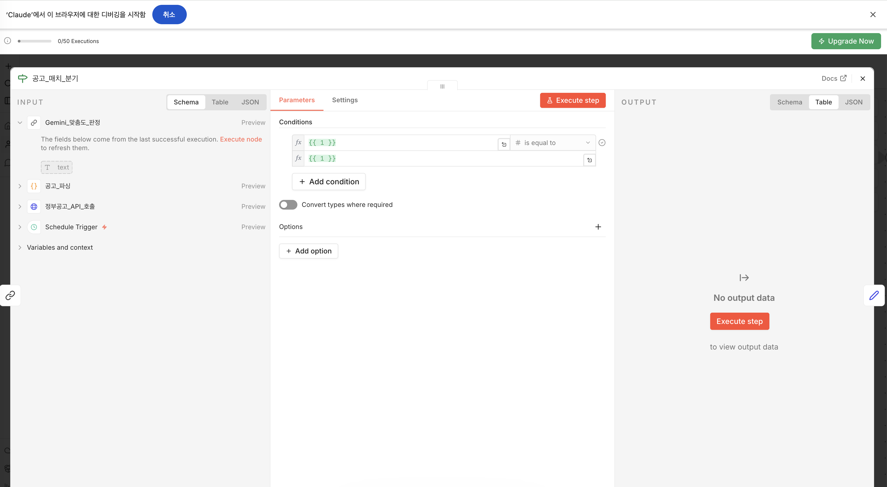
1=1 = 항상 통과 (수업 모드). 이 칸은 손대지 마세요.
블록 5번은 IF(분기). 'AI가 맞다고 판단한 공고만 다음으로 보내자'라는 스위치예요. 수업 중엔 '항상 참'으로 두고 모든 공고가 다음 단계로 가게 합니다. 수업 후에는 '`match=true`인 공고만' 조건으로 바꾸시면 됩니다.
36 블록 F · 실습 2 · AI 판단
이번 45분 — 3칸 손보기
레시피 3칸만 바꾸면 사장님 가게 맞춤 자동화가 됩니다.
손보기 1: AI 질문글
손보기 2: 메일 받는 사람
손보기 3: 시트 주소
오늘 패턴을 내 것으로
이번 45분 동안 사장님이 손볼 칸은 딱 세 곳입니다. 가게 이름·업종·지역. 똑같은 동작 세 번이니까 금방 끝나요. 반복적이어서 졸리실 수 있는데, 이 구간만 넘기면 자동화가 내 가게 이야기로 바뀝니다.
37 블록 F · 실습 2 · AI 판단
손보기 1 열기 — Gemini 블록 더블클릭
AI 질문글(프롬프트)이 들어있는 칸 찾기.
Gemini_맞춤도_판정 블록 클릭
오른쪽 설정 패널 오픈
Prompt Type(프롬프트 유형)=Define below(아래에 정의) 확인
Text 칸에 질문글 5줄 표시
손보기 1 시작. Gemini_맞춤도_판정 블록을 더블클릭하시면 오른쪽에 프롬프트 전문이 열립니다. 스크롤 내려 보시면 '가마솥식당'이라는 예시 가게가 들어 있어요. 그 부분을 찾아 주세요.
38 블록 F · 실습 2 · AI 판단
현재 질문글 읽어보기
지금 들어있는 예시 페르소나를 먼저 읽고 위치 파악.
"서울에서 작은 한식당"
예시 상호 3회 등장 (교체 대상)
공고 제목·대상·분류 변수
JSON 응답 요청 문장
먼저 현재 질문글(프롬프트)을 처음부터 끝까지 한 번 쭉 읽어 주세요. 내용을 이해하실 필요는 없고, '어디에 가게 이름이 들어가 있구나' 정도만 감 잡으시면 됩니다.
39 블록 F · 실습 2 · AI 판단
[안심] 프롬프트는 문장이에요
문법 틀려도 AI 알아들음
복붙 후 이름만 바꿔도 OK
3줄만 교체하면 끝
긴장할 필요 없음
프롬프트가 길어서 부담되실 수 있는데, 안심하세요 — 이건 그냥 AI한테 보내는 '한국어 질문글'이에요. 문법·띄어쓰기 틀려도 AI가 알아서 이해합니다. 영어도 코드도 아니에요.
40 블록 F · 실습 2 · AI 판단
바꿀 부분 3줄 — 가게·업종·지역
질문글에서 딱 3곳만 내 가게 정보로 교체.
가게 이름 → 사장님 상호
업종 → 분식·카페·치킨
지역 → 본인 동네
다른 줄은 건드리지 말기
바꿀 부분은 딱 세 줄입니다. 가게 이름 — 상호명, 업종 — 음식점 종류, 지역 — 시·군·구. 예를 들어 '가마솥식당 · 한식당 · 서울 강남' 이 기본값이에요.
41 블록 F · 실습 2 · AI 판단
교체하기 예시 — 김밥천국 상계점
before/after 비교로 교체 결과 시각 확인.
가마솥식당 → 김밥천국 상계점
한식당 → 분식집
서울 → 서울 노원구
패널 밖 클릭 = 자동 저장
실제로 어떻게 바꾸는지 예시로 보여드릴게요. '가마솥식당 → 김밥천국 상계점', '한식당 → 김밥·분식', '서울 강남 → 서울 노원구'. 사장님 가게 이야기로 통째로 덮어쓰시면 됩니다.
42 블록 G · 휴식
⏱
휴식 #3 — 10분
다음 → 실습 3 — Sheets + Gmail 발송
2:40~2:50 커리큘럼 공식 휴식
실습 2 끝 · 실습 3 시작 전
작업 공간 탭 닫지 말기
돌아오면 Sheets·Gmail 손보기부터
세 번째 휴식입니다. 10분 쉬어 가세요. 여기까지 오셨으면 오늘 수업의 절반을 넘기신 거예요. 돌아오시면 실습 3 — 시트에 쌓고 메일로 받는 진짜 하이라이트 구간입니다.
43 블록 H · 실습 3 · 시트·메일
[실습 3]
시트에 쌓고 메일로 알림
2:50–3:35
45분
배울 것: Sheets → IF 분기 → Gmail → Publish 버튼 (=커리큘럼 '활성화 토글')
결과물: 매주 월요일 맞춤 공고 메일 발송
커리큘럼 블록: 2:50~3:35 (45분)
이 실습이 끝나면 = 자동화 완성 + 운영 시작
📒📨 Sheets + Gmail = 장부 기입 + 우체부
실습 3 시작. 앞 두 실습에서 만든 흐름을 사장님 구글 시트에 한 줄씩 쌓고, 사장님 Gmail 로 메일을 보내는 구간이에요. 오늘 수업이 끝나는 건 이 블록입니다. 45분 안에 사장님 받은편지함에 메일이 딱 하나 도착하게 할 거예요.
44 블록 H · 실습 3 · 시트·메일
블록 6: 공고_데이터_재구성 (Set)
시트에 담기 전 필요한 4칸만 깔끔히 재포장.
역할: 4칸 재포장
제목·주관기관·접수마감·상세링크
앞 블록의 칸 값 꺼내쓰기
시트 모양에 맞춰 정리
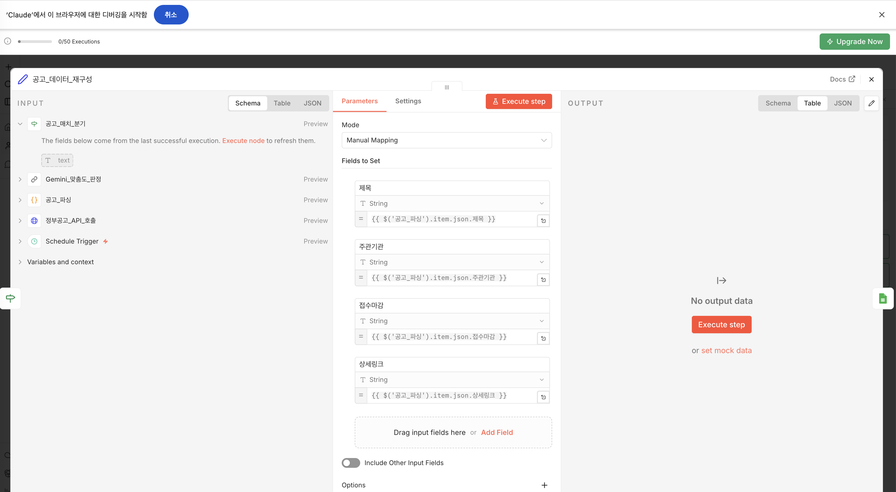
블록 6번은 공고_데이터_재구성 (Set). IF 뒤에는 `$json` 대신 `$('공고_파싱').item.json.X` 로 노드 이름을 직접 불러야 해요. 이 Set 블록이 4개 키(제목·주관기관·접수마감·상세링크)를 깔끔하게 재포장하는 베스트 프랙티스 패턴입니다.
45 블록 H · 실습 3 · 시트·메일
블록 7: 시트_기록 (Google Sheets)
4칸을 구글 시트 한 행으로 쌓아두는 장부 담당.
역할: 시트 한 줄 추가
Resource(대상)=Sheet(시트) · Operation(작업)=Append(행 추가)
매핑 = Map Automatically(자동 매핑)
documentId 손볼 예정
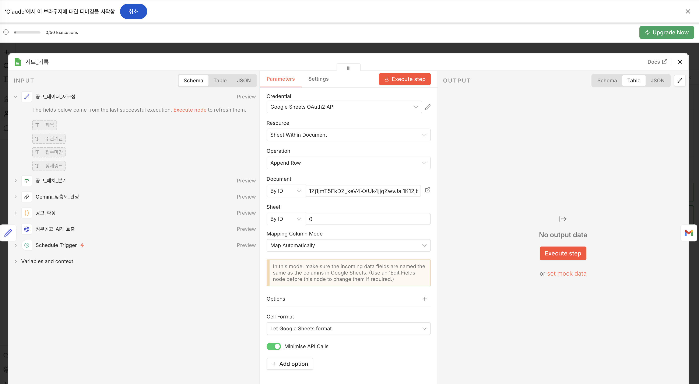
블록 7번은 시트_기록 (Google Sheets). 매주 새 공고 한 줄을 사장님 구글 시트 맨 아래에 덧붙이는 블록이에요. 사장님이 손보실 건 '시트 주소' 한 칸입니다.
46 블록 H · 실습 3 · 시트·메일
블록 8: 뉴스레터_발송 (Gmail)
본문·받는 사람만 주면 사장님 이름으로 발송.
역할: 사장님께 HTML 메일
sendTo = 예시 이메일 (수업 후 본인 메일로 교체)
subject · HTML 본문 이미 작성
sendTo 손볼 예정
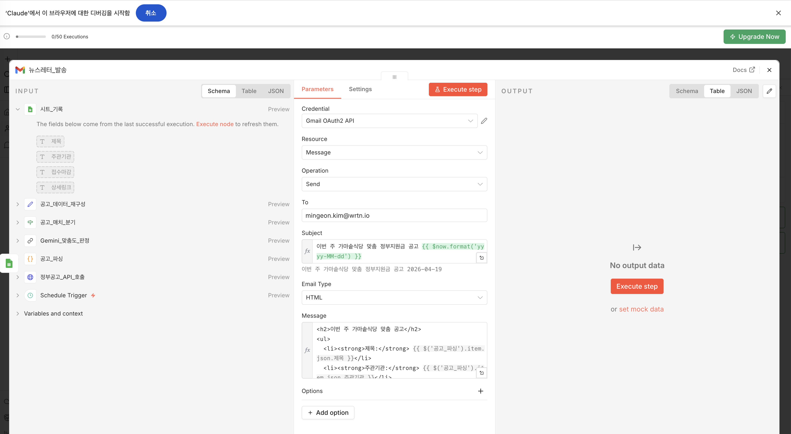
블록 8번은 뉴스레터_발송 (Gmail). 시트에 쌓은 데이터를 바로 사장님 메일로 보내는 마지막 블록입니다. HTML 본문이 이미 잘 꾸며져 있고, 사장님이 바꿀 건 '받을 메일 주소' 한 칸이에요.
47 블록 H · 실습 3 · 시트·메일
손보기 2 열기 — Gmail 블록 To 칸
우체부에게 사장님 본인 주소를 알려주는 칸.
뉴스레터_발송 블록 더블클릭
To 칸에 현재 값 확인
예시 이메일이 들어 있음 (강사 주소)
이 칸만 본인 메일로 교체
Gmail 블록 패널 — To / Subject / Message 필드가 보이는 편집 창
손보기 2 열기. 뉴스레터_발송 블록을 더블클릭하시고 To(받는 사람) 칸을 봐 주세요. 지금 예시로 강사 메일이 들어가 있는데, 이걸 사장님 본인이 받으실 Gmail 주소로 바꿔 주시면 됩니다.
48 블록 H · 실습 3 · 시트·메일
타이핑 오타 주의 (@ 확인)
@ 빠짐·공백 하나가 메일 실패 원인이 됩니다.
Cmd+A(전체 선택) → Delete(지움) → 본인 메일 · Windows: Ctrl+A → Delete
@ 빠짐·공백 체크
하단 빨간 경고 없으면 OK
자동 저장 인디케이터 확인
타이핑하실 때 @ 위치 · .com 마지막 점 · 오타 한 글자라도 있으면 메일이 안 가요. 천천히 한 글자씩 확인해 주세요. 헷갈리면 다른 곳에 써 보고 복사·붙여넣기 하시면 제일 안전합니다.
49 블록 H · 실습 3 · 시트·메일
손보기 3 준비 — 본인 구글 시트 만들기
사장님 본인 시트에 자동으로 기록되도록 준비.
구글 드라이브 → 새 시트
시트 이름 자유롭게
A1~D1 헤더 4칸 정확히
제목·주관기관·접수마감·상세링크
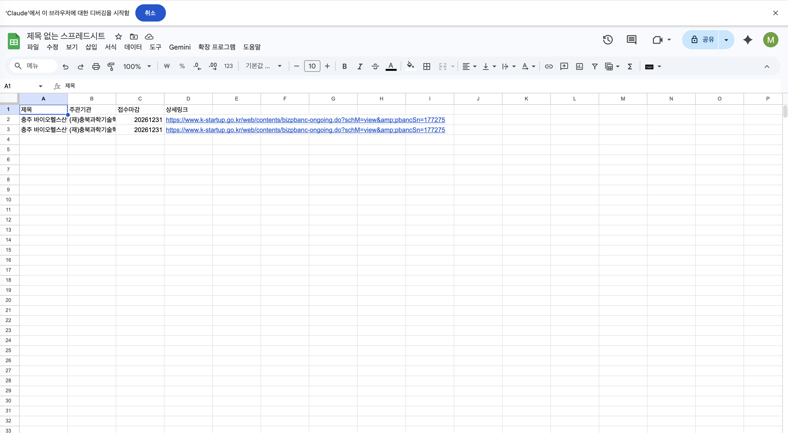
손보기 3 준비. 사장님 개인 Google Sheets 하나를 새로 만들어 주세요. Google Drive → 새로 만들기 → Google 스프레드시트 → 이름은 '정부지원금_알림' 같이 적으시면 됩니다. 시트 1행에 제목·주관기관·접수마감·상세링크 네 칸 헤더를 입력해 주세요.
50 블록 H · 실습 3 · 시트·메일
시트 ID 복사 — 주소창에서
시트 주소 중 /d/ 뒤 긴 문자열이 시트 ID. 요령: 주소창 한 번 클릭 → 전체 파랗게 선택됨 → Cmd+C(Windows: Ctrl+C) → n8n에 붙여넣고 By URL 모드에서는 그대로 사용 가능 (자동 인식). By ID 모드에서는 /d/docs.google.com... 앞뒤 잘라내기.
주소 = /d/ID부분/edit
/d/ 와 /edit 사이만 드래그
Cmd+C(복사) · Windows: Ctrl+C
메모장에 일단 저장
방금 만든 시트의 주소(URL)에서 '/d/' 와 '/edit' 사이에 있는 긴 문자열이 시트 ID입니다. 그 부분만 블록 처리해서 복사해 주세요. 주소 전체가 아니라 ID 부분만입니다.
51 블록 H · 실습 3 · 시트·메일
손보기 3 — 시트_기록 Document 칸
사장님 본인 시트 ID로 교체하면 제목이 바로 보입니다.
시트_기록 블록 더블클릭
Document(문서) → By ID(ID로 지정) 모드
칸 선택 → Cmd+A(전체 선택) → Cmd+V(붙여넣기) · Windows: Ctrl+A → Ctrl+V
시트 제목 자동 인식 확인
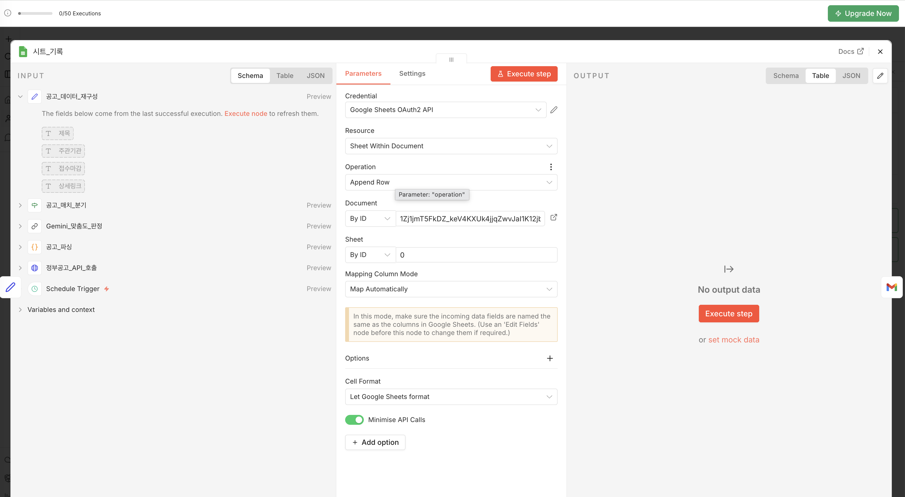
손보기 3 실행. 시트_기록 블록을 더블클릭하시고 Document 칸을 보세요. 지금 값이 있으면 지우시고, 방금 복사한 사장님 시트 ID 를 붙여넣으시면 됩니다.
52 블록 H · 실습 3 · 시트·메일
Sheet(시트) 드롭다운 = 시트1 유지
헤더 이름이 일치하면 n8n이 알아서 칸을 맞춰줍니다.
Sheet(시트) 드롭다운 열기
기본 시트1 유지
매핑 = Map Automatically(자동 매핑)
헤더 4칸 이름으로 자동 매칭
Document 아래에 Sheet(시트) 드롭다운이 있어요. 여기는 '시트1' 기본값을 그대로 두시면 됩니다. 수정할 필요 없습니다.
53 블록 H · 실습 3 · 시트·메일
한 번 실행 — Execute workflow(워크플로우 실행)
전체 흐름을 한 번만 돌려 결과를 확인.
캔버스 하단 큰 버튼
Execute workflow(워크플로우 실행) 클릭
9블록 순차 초록 ✓
0/50 → 1/50 카운터 증가
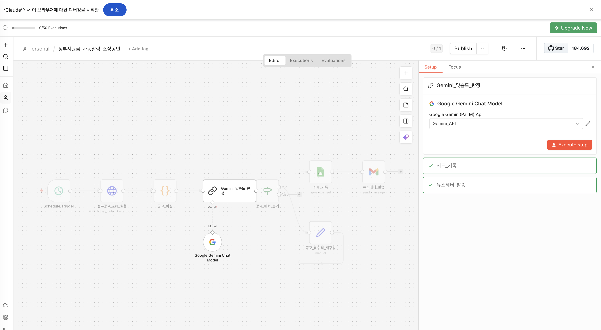
자 이제 한 번 실행해 볼게요. 캔버스 하단의 Execute workflow(워크플로우 실행) 버튼 한 번 눌러 주세요. 오늘 처음으로 9블록 전체가 한꺼번에 움직이는 순간입니다.
54 블록 H · 실습 3 · 시트·메일
실행 중 화면 — 순차 초록 ✓
블록 하나씩 초록 ✓이 차오르는 게 정상 흐름입니다.
Schedule → HTTP → Code
→ Gemini → IF → Set
→ Sheets → Gmail
순차적으로 초록 체크 표시
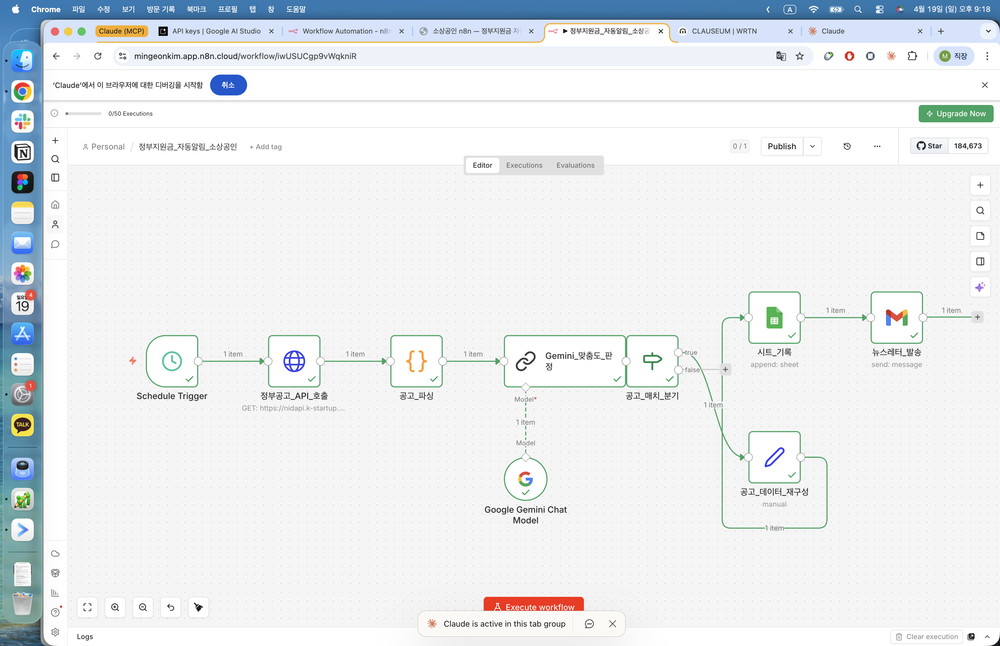
9블록 전체가 초록 ✓ 로 차오른 실행 완료 화면
블록이 왼쪽부터 차례대로 초록 체크 ✓ 로 바뀌어 가는 걸 한 번 쭉 보세요. Schedule Trigger → HTTP → Code → Gemini → IF → Set → Sheets → Gmail 순서로 불이 켜집니다.
55 블록 H · 실습 3 · 시트·메일
[안심] 1/50만 썼어요
한 번 실행 = 1/50 소진 (월 기준)
체험 기간 내 49회 여유 남음
주 1회 자동 실행이면 한도 거의 안 들어요
돈 걱정 없음
여기서 잠깐 안심 — 방금 한 번 실행이 이번 달 50회 중 딱 1회만 썼어요. 아직 49회가 남아 있고, 신용카드는 없으니 과금 걱정도 없습니다. 주 1회 자동 실행이면 한 달에 4회 정도만 돌아가서 한도가 거의 안 줄어요.
56 블록 H · 실습 3 · 시트·메일
결과 확인 1 — 구글 시트 2행
시트 탭 새로고침
2행에 4칸 채움
한글 제목 · URL 확인
접수마감 날짜 확인
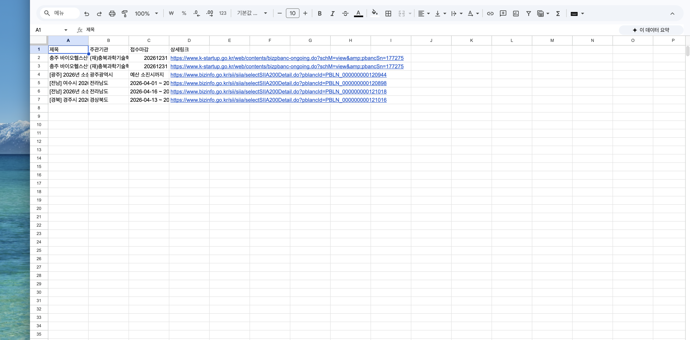
구글 시트 — 1행 헤더 + 2행 새 공고 자동 기록된 실제 캡처
사장님의 Google 시트 탭으로 돌아가서 한 번 새로고침(F5) 눌러 보세요. 2행에 제목·주관기관·접수마감·상세링크 네 칸이 자동으로 채워져 있으면 성공입니다.
57 블록 H · 실습 3 · 시트·메일
결과 확인 2 — 받은편지함 메일 1통
메일 1통 도착이 전체 흐름 성공 증거.
Gmail 탭 새로고침
"이번 주 ... 공고" 제목
본문 4bullet 한글·URL
링크 클릭 = K-Startup 열림
Gmail 받은편지함 — 자동 발송된 뉴스레터 메일 본문
사장님의 Gmail 받은편지함 탭도 열어 보세요. '이번 주 맞춤 정부지원금 공고' 같은 제목의 메일이 한 통 도착해 있어야 해요. 본문에 시트와 같은 정보가 들어가 있고, 상세 링크를 누르면 K-Startup 공고 페이지가 열립니다.
58 블록 H · 실습 3 · 시트·메일
[체크포인트] 시트 + 메일 둘 다
시트 4칸 한글·URL ✓
메일 4bullet 한글·URL ✓
카운터 1/50 ✓
Schedule Trigger 재확인 = Weeks · Mon · 9시 (다음 슬라이드 활성화 전 확인)
왼쪽 구글 시트 2행 + 오른쪽 받은편지함 메일 — 두 증거가 동시에 보이면 완성
왼쪽 구글 시트 2행 + 오른쪽 받은편지함 메일 — 두 증거가 동시에 보이면 완성
체크포인트. 지금 사장님 화면에 (1) 시트 2행 채워짐, (2) Gmail 받은편지함에 메일 1통, 두 가지가 다 보이시면 오늘 수업의 핵심은 완성된 거예요. 축하드립니다.
59 블록 H · 실습 3 · 시트·메일
Publish 버튼 누르기 — 매주 자동 완성
매주 월요일 9시 자동 실행 스위치 ON. (커리큘럼 '활성화 토글' = 현재 Cloud의 'Publish 버튼')
사전 체크: Schedule Trigger Weeks·Mon·9시
우상단 Publish(게시) 버튼 클릭
클릭 후 버튼이 Published 상태로 전환
이후 Schedule Trigger 패널에서 다음 실행 Mon 09:00 확인
우측 상단 Publish 버튼 — 눌러 Published 상태로 전환된 모습
마지막 한 단계만 남았어요. 캔버스 우측 상단 Publish(게시) 버튼을 한 번 누르시면 매주 월요일 오전 9시 자동 실행이 시작됩니다. 커리큘럼에 '활성화 토글'이라고 적혀 있는 것과 같은 기능이에요.
60 블록 H · 실습 3 · 시트·메일
[체크포인트] Workflow published 확인
커리큘럼 '활성화 토글' = 현재 Cloud의 'Publish 버튼' (동일 기능). 토스트 문구는 Cloud 버전에 따라 변할 수 있습니다.
Publish 클릭 → 버전 이름 자동 입력
Describe changes (선택) = 비워두기
파란 Publish 버튼 → 확정
'Workflow published' 알림 확인
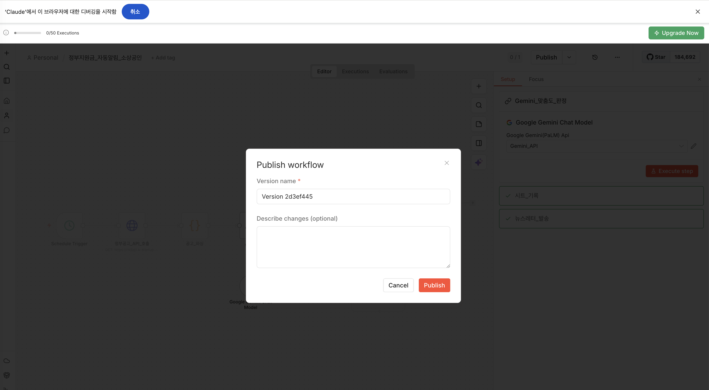
Publish 직후 화면 하단 토스트 — "Workflow published"
Publish 를 누르고 나면 'Workflow published'라는 안내 토스트가 떠요. '이제 스케줄 트리거에 따라 자동 실행이 시작됩니다'라는 메시지입니다. 다음 실행 시각은 Schedule Trigger 노드 패널에서 확인하실 수 있어요. 수업 후에 끄고 싶으시면 같은 버튼으로 Unpublish 하시면 됩니다.
61 블록 I · 정리
9블록 전체 흐름 — 한 장 요약
오늘 만든 자동화 흐름을 한 장으로 되돌아보기.
01 Schedule → HTTP → Code → Gemini (+보조) → IF
02 → Set → Sheets → Gmail (= 8 + 1 보조)
03 블록 = 각자 한 가지 일만 함
04 이 패턴 = 다른 자동화에도 그대로
🍳 알람 → 배달원 → 정리 직원 → 매니저 → 갈림길 → 포장 → 장부 → 우체부
지금까지 한 걸 9블록 한 장으로 다시 한번 보여드립니다. Trigger → API → Parse → AI → IF → Set → Sheets → Gmail. 오늘 사장님이 직접 이 흐름을 조립하신 거예요.
62 블록 I · 정리
월 1회 점검 — 3가지만 보세요
참고: Gemini API 무료 티어(매일 약 1,500회)가 충분히 크므로 이 워크플로우는 거의 무료. 유료 전환 희망 시 Google AI Studio 대시보드에서 예산 설정 가능.
01 1) 0/50 카운터 숫자 확인 (한도 여유)
02 2) 빨간 ⚠ 배지 없는지 Executions(실행 이력)
03 3) Gemini API 키 만료일 체크 (구글 AI Studio)
04 5분이면 충분 · 캘린더 알림 추천
매달 한 번만 1분 동안 점검하시면 1년 내내 동작합니다. (1) Executions 탭에 실행 기록이 있는지, (2) 최근 실행이 초록 ✓ 인지, (3) 본인 받은편지함에 지난주 메일이 와 있는지 — 이 세 가지만 보시면 돼요.
63 블록 I · 정리
자주 만나는 오류 Top-5 — 이것만 알면 90% 해결
이 다섯 가지만 외우시면 수업 후 마주치는 오류의 90%는 자가 복구 가능합니다.
01 1) HTTP 404 — URL 오타 (주소창 확인)
02 2) Code Node 스마트따옴표 " " → ASCII "" 교체
03 3) Gemini 429 — 하루 한도 초과 (17:00 이후 회복 또는 flash-lite 교체)
04 4) OAuth 열쇠 만료 — 좌측 Credentials(자격증명) → Reconnect(다시 연결) 한 번
05 5) 시트 헤더 불일치 — A1~D1 4칸(제목·주관기관·접수마감·상세링크) 확인
🔧 디버그 = 다섯 가지 단골 오류 체크리스트
자주 만나는 오류 Top 5. (1) 스마트따옴표 문제 → 일반 따옴표로 교체, (2) 노드 이름 오타 → `$('노드이름')` 복사, (3) Gemini 429 한도 → 다음 날 자동 회복 또는 flash-lite 교체, (4) OAuth 만료 → Reconnect 한 번, (5) 시트 헤더 누락 → 1행에 4칸 헤더 추가. 90%는 이 다섯 개입니다.
64 블록 I · 정리
열쇠(Credential) 만료 시 = Reconnect(다시 연결) 한 번
열쇠 만료 시 같은 방법으로 다시 복사.
01 좌측 Credentials(자격증명) 메뉴
02 해당 항목 클릭 → Reconnect(다시 연결) 버튼
03 Sign in with Google(구글로 로그인) 재실행
04 90일마다 1번 정도 발생 (Gmail/Sheets OAuth)
OAuth 토큰은 보통 6개월~1년 정도 유효한데, 만료되면 빨간 점이 다시 뜹니다. 당황하지 마시고 해당 블록 Credential 메뉴 → Reconnect(다시 연결) 버튼 한 번 누르시면 됩니다. 같은 Google 계정으로 다시 로그인만 하시면 끝이에요.
65 블록 I · 정리
Trial 만료 후 — 계속 쓸지 결정
01 체험 만료 후 자동 정지 (자동 결제 없음)
02 체험 기간은 계정마다 최소 14일 ~ 최대 180일, 대시보드에 남은 일수 표시
03 계속 쓰시면 Settings → Plan & billing(요금제) → Starter $20/월
04 수료 시 수강 혜택: 2개 도구 × 3개월 = 최대 20만원 상당 (#68 참고)
🔁 Trial 만료 = 체험판 종료, 서비스 끊김 없음
체험 기간이 끝나면 자동으로 멈추고, 자동 결제는 절대 없습니다. 체험은 계정마다 달라서 최소 14일 ~ 최대 180일 사이인데, 대시보드 카드에 '남은 일수'가 표시돼요. 계속 쓰시려면 n8n Cloud Starter $20/월 이고, 수료 하시면 저희가 드리는 혜택으로 3개월 동안 최대 20만원 상당 도구를 지원 받으실 수 있어요.
66 블록 I · 정리
오늘 패턴 = 5가지 응용 아이디어
치킨집: 배민 별점 4↓ 리뷰 자동 알림 + 주간 요약
한식당: 날씨 예보 → 배달 비수기 예측 카톡
카페: 인스타 팔로워 수 변화 주 1회 시트 기록
김밥집: 대량 주문 문의 메일 자동 분류 → 우선 답장
오늘 배운 패턴은 정부지원금뿐만 아니라 여러 데 응용 가능해요. 신상 경쟁사 메뉴 알림, 네이버 블로그 검색 자동 보고서, 경쟁점 리뷰 모니터링, 날씨 기반 재고 경보, 주간 매출 요약 메일 — 같은 9블록 구조에 API만 바꾸시면 됩니다.
67 블록 I · 정리
사장님이 절약한 시간 (연 26시간)
매주 30분 × 52주 = 연간 26시간을 다시 손에.
주당 30분 공고 검색 절약
연간 26시간 = 3영업일
AI 판단 = 숨은 추가 이득
휴무일 복귀가 이 자동화
사장님이 매주 직접 공고 검색하셨을 때를 생각해 볼게요. 주 30분 × 52주 = 연 26시간. 이 시간을 영업이나 가족 시간에 돌려 쓰실 수 있습니다. 4시간 투자의 결과예요.
68 블록 I · 정리
수강 혜택 — 최대 20만원 상당 구독 지원
2개 도구 × 3개월 = 최대 20만원 상당
2개 도구 × 3개월 = 최대 20만원 상당 구독 지원
대상 도구: Google Gemini · n8n Cloud · CapCut Pro · Kling AI (4개 중 2개 선택)
사장님이 직접 결제 → 영수증 제출 → 뤼튼 정산
수료 확정 후 안내 (수료 = 과정 1 + 선택 과정 1개 + 사후 컨설팅 2회)
오늘 과정을 수료하시면 최대 20만원 상당의 구독 지원을 받으실 수 있어요. n8n Cloud·Gemini·CapCut·Kling 네 개 도구 중 두 개를 3개월 동안 저희가 결제해 드립니다. 환율·플랜 선택에 따라 16~22만원 범위로 움직여요.
69 블록 I · 정리
[체크포인트 완료] 오늘 만든 것 — 한 줄 정리
가져오기 ✓ 손보기 ✓
한 번 실행 ✓
3필드 customize ✓
Publish 버튼 (=커리큘럼 '활성화 토글') ✓
매주 월요일 자동 실행 ✓
Published 상태의 워크플로우 — 5단계 체크포인트 모두 완료
오늘 사장님이 해내신 걸 한 줄로 정리하면 — 워크플로우 가져오기 ✓ · 3칸 손보기 ✓ · 한 번 실행 ✓ · Publish 버튼 눌러서 매주 자동 실행 ✓. 5단계 전부 체크입니다. 박수 한 번 쳐 드릴게요.
70 블록 I · 정리
더 배우려면 (course2_kit 참고)
n8n 공식 커뮤니티
유튜브 "n8n 한국어" 채널
자료집 PDF 읽을거리 5개
월 1회 사장님 사례 공유회
더 배우고 싶으시면 course2_kit 폴더 안에 troubleshooting·prompts·business_profile 자료가 있어요. 월 1회 사장님 사례 공유회도 운영할 예정이니 답장 주시면 안내 드릴게요.
71 블록 J · Q&A·마감
💬
궁금한 점 받습니다 (QR + 카톡)
손 들어 주세요
마이크 돌려드립니다
연락처 QR 좌측
카톡 오픈채팅방 안내
QR 연락처 · 카톡
마지막으로 질문 받습니다. QR 코드 찍으시면 카톡 오픈채팅방으로 들어가실 수 있어요. 수업 끝나고 집에 가셔서 막히시는 부분 생기면 언제든 올려 주세요. 강사·조교가 함께 봐 드립니다.
72 블록 J · Q&A·마감
❓
흔한 질문 미리 정리 (FAQ)
Q. 컴퓨터 꺼도 돼요? → 네
Q. 무료로 계속? → 체험 만료(최소 14일~) 후 유료 또는 수료 시 수강 혜택으로 3개월 지원
Q. 오류 나면? → Executions(실행 이력)
Q. 다른 공고? → 블록 교체
자주 오는 질문 네 개 미리 정리해 드릴게요. 컴퓨터 꺼도 되는지 — 네. 무료로 계속 쓸 수 있는지 — 체험 만료 후 유료 전환 또는 수강 혜택으로 3개월 지원. 오류 나면 어디 보는지 — Executions 탭. 다른 공고도 되는지 — 블록 URL만 바꾸시면 됩니다.
73 블록 J · Q&A·마감
🎓
수료 · 피드백 설문 · 다음 과정 예고
4시간 완주 · 수료 축하
수료 기준: 워크플로우 제출 + 사후 컨설팅 2회 이수 (커리큘럼 §7)
QR 1분 피드백 (좋았던 점 / 어려웠던 점 / 다음 주제)
다음 과정: AI로 리뷰 대응 — 수료증 + 수강 혜택 안내 이메일 발송
QR 피드백 설문
수료 축하드립니다. 잠시 뒤 피드백 설문 QR 보내 드리고, 다음 과정 2-2(영상 블로그 자동화) 예고도 함께 안내드릴게요. 오늘 함께해 주셔서 감사드립니다.